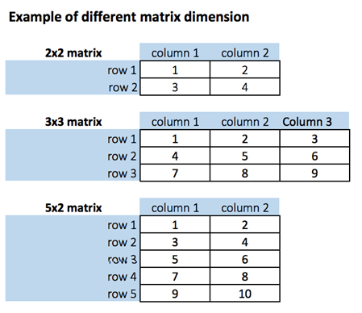
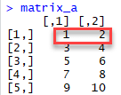
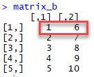
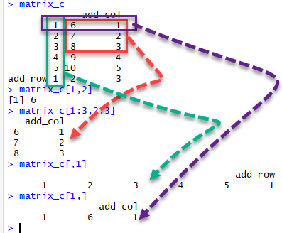

행렬은 m개의 행과 n개의 열을 갖는 2차원 배열이다. 다시 말해 행렬은 같은 데이터 타입을 갖는 2개 이상의 벡터들의 조합이다.
주의: R에서는 2차원 이상의 배열을 생성할 수 있다.

우리는 matrix( )함수를 이용하여 행렬을 생성할 수 있다. 이 함수는 3 개의 인수를 취한다.
xxxxxxxxxxmatrix(data, nrow, ncol, byrow = FALSE)
인수(Arguments):
byrow = FALSE (기본 값)를 사용한다.
예제 1:
1에서 10의 연속된 수로 2개의 5x2 행렬을 만들어 보자. 하나는 byrow=TRUE를 이용하고, 다른 하나는 byrow=FALSE를 사용하고 그 차이를 살펴보자.
xxxxxxxxxx# Construct a matrix with 5 rows that contain the numbers 1 up to 10 and 'byrow = TRUE'matrix_a <-matrix(1:10, byrow = TRUE, nrow = 5)matrix_a
결과:

예제 2:
xxxxxxxxxx# Construct a matrix with 5 rows that contain the numbers 1 up to 10 and byrow = FALSEmatrix_b <-matrix(1:10, byrow = FALSE, nrow = 5)matrix_b
결과:

주의: matrix_b <-matrix(1:10, byrow = FALSE, ncol = 2) 명령을 사용하면 위와 동일한 결과를 가지게 될 것이다.
예제 3:
ncol을 이용해서 4 x 3 행렬을 생성할 수 있다. R은 3개의 열을 생성하여 각 줄을 위에서 아래 방향으로 행을 채우게 될 것이다. 다음의 예를 확인하라.
xxxxxxxxxxmatrix_c <-matrix(1:12, byrow = FALSE, ncol = 3)matrix_c
결과:
xxxxxxxxxx## [,1] [,2] [,3]## [1,] 1 5 9## [2,] 2 6 10## [3,] 3 7 11## [4,] 4 8 12
예제 1: matrix_a의 차원 출력하기
xxxxxxxxxx# Print dimension of the matrix with dim()dim(matrix_a)
결과:
xxxxxxxxxx## [1] 5 2
예제 2:
xxxxxxxxxxdim(matrix_c)
결과:
xxxxxxxxxx## [1] 4 3
dim()을 이용한 행렬 생성 방법
xc <- 1:6dim(c) <- c(3,2)결과:
xxxxxxxxxx## [,1] [,2]## [1,] 1 4## [2,] 2 5## [3,] 3 6
nrow()와 ncol() 함수 이용벡터의 length() 함수가 행렬에서는 nrow()와 ncol()로 확장된다.
예제 3:
xxxxxxxxxxnrow(matrix_a)ncol(matrix_a)결과 :
xxxxxxxxxx> nrow(matrix_a)## [1] 5> ncol(matrix_a)## [1] 2
cbind( ) 함수를 이용하여 하나의 행렬에 열을 추가할 수 있다. cbind( )는 column binding을 의미한다. cbind( )는 지정한 만큼의 행 또는 열을 결합시킬 수 있다. 예를 들어, 앞의 예는 5x2 행렬을 생성하였다. 이 행렬에 3번째 열을 추가하고 차원이 5x3 인지 확인해 보자.
cbind()함수 이용
예제 1 :
xxxxxxxxxx# concatenate c(1:5) to the matrix_amatrix_a1 <- cbind(matrix_a, 1:5)# Check the dimensiondim(matrix_a1)
결과:
xxxxxxxxxx## [1] 5 3
예제 2:
xxxxxxxxxxmatrix_a1
결과 :
xxxxxxxxxx## [,1] [,2] [,3]## [1,] 1 2 1## [2,] 3 4 2## [3,] 5 6 3## [4,] 7 8 4## [5,] 9 10 5
예제 3:
우리는 한 개 이상의 열도 추가할 수 있다. 다음의 수열로 만들어진 martix_a2 행렬을 살펴보자. 새 행렬의 차원은 13에서 24까지의 숫자로 이루어진 4x3 행렬이 될 것이다.
xxxxxxxxxxmatrix_a2 <-matrix(13:24, byrow = FALSE, ncol = 3)
결과:
xxxxxxxxxx## [,1] [,2] [,3]## [1,] 13 17 21## [2,] 14 18 22## [3,] 15 19 23## [4,] 16 20 24
예제 4:
xxxxxxxxxxmatrix_c <-matrix(1:12, byrow = FALSE, ncol = 3)matrix_d <- cbind(matrix_a2, matrix_c)dim(matrix_d)
결과:
xxxxxxxxxx## [1] 4 6
주의: 행렬의 행의 갯수는 cbind 작업 이후에도 같아야 한다.
rbind()함수 이용
cbind()는 열을 결합시키는 반면, rbind()는 행(row)을 결합한다. matrix_c 행렬에 하나의 행을 추가해 보고 차원이 5x3인지 확인해 보자.
예제 5:
xxxxxxxxxxmatrix_c <-matrix(1:12, byrow = FALSE, ncol = 3)# Create a vector of 3 columnsadd_row <- 1:3# Append to the matrixmatrix_c <- rbind(matrix_c, add_row)# Check the dimensiondim(matrix_c)
결과:
xxxxxxxxxx## [1] 5 3
벡터에서 사용한 names()가 행에 대하여는 rownames()로, 열에 대해서는 colnames()로 확장된다.
예제 1:
xxxxxxxxxx# Construct a matrix with 5 rows that contain the numbers 1 up to 10 and 'byrow = TRUE' matrix_a <-matrix(1:10, byrow = TRUE, nrow = 5)matrix_arownames(matrix_a) <- c("Row 1", "Row 2", "Row 3", "Row 4", "Row 5")colnames(matrix_a) <- c("Col 1", "Col 2")matrix_arownames(matrix_a)colnames(matrix_a)결과:
xxxxxxxxxx> matrix_a## [,1] [,2]## [1,] 1 2## [2,] 3 4## [3,] 5 6## [4,] 7 8## [5,] 9 10>> rownames(matrix_a) <- c("Row 1", "Row 2", "Row 3", "Row 4", "Row 5")> colnames(matrix_a) <- c("Col 1", "Col 2")> matrix_a## Col 1 Col 2## Row 1 1 2## Row 2 3 4## Row 3 5 6## Row 4 7 8## Row 5 9 10>> colnames(matrix_a)## [1] "Col 1" "Col 2"> rownames(matrix_a)## [1] "Row 1" "Row 2" "Row 3" "Row 4" "Row 5"
우리는 대괄호([])를 이용하여 행렬로부터 하나 또는 그 이상의 요소들을 선택할 수 있다. 이것이 행렬 분할의 원리이다.
예를 들어:
matrix_c[1,2] 는 첫번째 행과 두번째 열의 요소를 선택한다.matrix_c[1:3,2:3]는 1,2,3 행과 2,3 열의 데이터로 이루어진 행렬이다.matrix_c[,1] 는 첫번째 열의 모든 요소를 선택한다.matrix_c[1,]는 첫번째 행의 모든 요소를 선택한다.matrix_c[-1,]는 첫번째 행을 제외한 모든 요소를 선택한다.matrix_c[,-1] 는 첫번째 열을 제외한 모든 요소를 선택한다.
위의 코드에 대해 여러분이 얻게 될 결과는 다음과 같다.

예제 1 :
xxxxxxxxxxmatrix_c[1,2]matrix_c[1:3, 2:3]matrix_c[,1]matrix_c[1,]matrix_c[-1,]matrix_c[,-1]